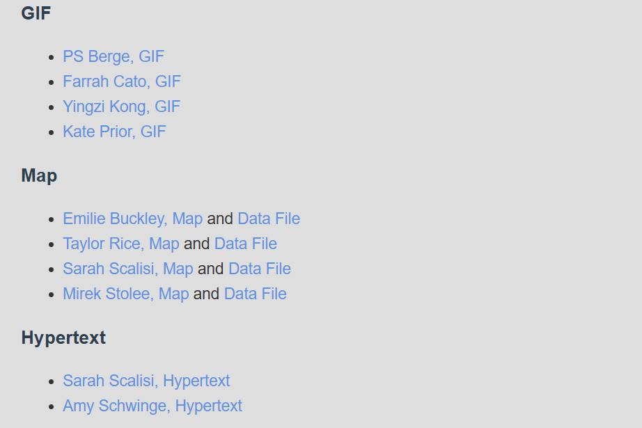

The humanities are framed as useless — yet they teach exactly the things people think college graduates should know.
“Despite documented demand for critical thinking and creative problem solving, … the stock of the ‘liberal arts’ as a signifier declined and a narrow definition of ‘return on investment’ emerged as the norm.”
— Cohen
Cohen suggests DH is a way to “approach the twenty-first-century emergencies roiling our campus.”
Leveraging the Halo
Cohen — redirecting the energy around “the digital”
“Even if many people did not know precisely what the ‘digital’ did or the future it would create, they were certain it was good and that the institution needed to do more in its name.”
— Cohen
“Digital” was a buzzword people threw resources at — the halo. (AI is often functioning that way right now.)
Cohen redirected that energy and urgency “into incorporating elements of digital humanities pedagogy into the curriculum across the college.”
Cohen’s Guiding Principles
Cohen — four commitments
Embrace undergraduates as authors, creators, and curators in the digital realm and in a laboratory setting.
Treat projects and partnerships as iterations and experiments — prioritize prototyping over finished or scalable projects.
Stand up an alternative technical infrastructure: a sandbox outside standard IT, with support gauged to small-scale projects.
Invite unique collaborations beyond academics and across the institution’s structural divisions.
The Digital and the Humanities
Cohen — DH is at home in the humanities
DH practices fit traditional humanities: “learning communities, writing-intensive courses, and collaborative assignments and projects.”
The learning outcomes are shared: “critical thinking and expression,” preparing “students as critical participants in civil society and democratic practices.”
One of the best things we can do is “providing students with a contemporary toolset and habits of mind vital to critiquing the digital culture around them.”
DH Across the Curriculum
Cohen and McGinn & Coats — integrate, don’t bolt on
Both readings argue for DH across the curriculum: building these approaches and skills in as integrated parts of humanities work, not standalone add-ons.
What makes sense in your curricular context?
A one-off exercise or workshop?
A unit?
The whole course?
What Is Born-Pedagogical DH?
McGinn & Coats — DH that begins in the classroom
McGinn and Coats coin born-pedagogical DH (bpDH): digital humanities that arises specifically from the classroom — in a context of curiosity, learning, and experimentation.
Tool and method selection follows the humanistic questions.
bpDH aligns with Vygotsky’s “proximal development”: learning works best when new skills bridge from what learners already know.
Keeping the Humanities in the Digital
McGinn & Coats — balancing the how-to and the why
Stay “close to the core of humanities methods and questions that the teacher already engages.”
“Balancing the ‘how-to’ with the ‘why,’ to make clear what humanistic perspectives are being enabled through the application of new skills and articulating that balance.”
— McGinn & Coats
In the end, “the selection of a DH method or platform depends more on the humanistic questions that the teachers want the class to engage with.”
Start Small. Play. Stay Small.
McGinn & Coats — three principles
Start Small: you don’t have to do everything at once. Try one thing.
Play: cultivate an environment of trying things out (and probably failing sometimes).
Stay Small: you don’t have to do everything. A small intervention may make more sense than a large-scale project.
Let your learning objectives be your guide.
Make the Objectives Visible
McGinn & Coats — connecting work to goals builds buy-in
“The more that the teachers and the students can see the clear relationship between these objectives and DH—while having a clear understanding about how they will be evaluated for this kind of work, with the assurance that having difficulties does not necessarily mean a failing grade—the more at ease students and teachers will be.”
— McGinn & Coats
Link learning objectives to assignments explicitly: students with a standardized-testing, high-stakes mindset may be skeptical of experimentation.
An Attainable Goal
McGinn & Coats — the through-line
“Instilling collaboration and experimentation into humanities methodology is an attainable and valuable goal.”
— McGinn & Coats
Regardless of how you bring technology in, collaboration and experimentation are the durable goals — the tools will keep changing.
Prompt Your Way to Teaching Tools
Ethan Mollick — lowering the barrier to entry
“With just a paragraph of instructions, teachers can create tools to help their students learn that would have, in previous years, required buying specialized software built by EdTech companies, even assuming that those companies existed.”
— Mollick
AI lets you do new things without EdTech, a big project team, or years of work.
The barrier to entry is pedagogical and subject-matter knowledge — not budget or technical expertise.
Better and Worse Ways
Mollick — three things to have AI build
An explanation of a concept, with examples.
An interactive quiz.
A game about a concept.
But we do not want to replace the slow, expert work of curriculum development with prompt iteration.
Drafts, Not Finished Products
Mollick — the risk scales with the stakes
Whatever you use it for, there are real risks that require careful checking.
Low-stakes quizzes and explanations are far less risky than assessments with real consequences.
Treat AI output as a draft, not a finished product.
Efficiency vs. Access
Mollick — what the real benefit is
One benefit of AI is efficiency — build your Canvas course or slides faster than you could alone.
But efficiency has historically been used to demand more labor from workers, so it’s double-edged.
The real benefit is expansion of access: enhancing your pedagogical and subject-matter knowledge by communicating it in ways you couldn’t on your own.
Your Signature Assignment
From brainstorming to one clear, organized assignment
Take the term’s brainstorming about assignments and AI engagement and refine it into one substantial signature assignment for your course — not a low-stakes task like our discussion posts.
Something you could share with a hiring committee, or use to excite students about your course.
Build in iteration or active learning.
Aim for transferable knowledge that feels relevant to students from different backgrounds.
Due July 5 · 200 points. No discussion post this week.
Context and Overview
Your assignment should include — (1 of 2)
Context for delivery in the course. What readings or earlier low-stakes tasks does this build on? Clarify what can be reused (like our discussion-post ideas) and what should be revised. You don’t need the exact week, but show where students are pedagogically.
Assignment name and overview. Write these student-facing, with detail appropriate to their stage — but design the assignment as a whole to be portfolio-facing too: legible to a hiring committee or colleague as evidence of your pedagogical thinking. Be transparent about learning objectives, and link the assignment to students’ goals and needs.
Examples and Criteria
Your assignment should include — (2 of 2)
Examples or descriptions of successful work. An example you’ve made that includes all required elements, or aspirational professional work. (In practice you might ask past students for permission — as in Critical Making in the Age of AI — but here, use external models or build your own.)
Rubrics or criteria for grading. Bullet criteria or a formal Canvas rubric. Match the format to your outcomes and class scale: formal rubrics suit larger or intro classes; flexible rubrics suit deeper, specialized work like ours.
Documenting AI Use
Make the process transparent
Specific guidelines for using AI, and documenting that usage. Be explicit about what you expect:
Prompts used throughout the process?
Screenshots from using an agentic AI tool to accomplish a goal?
A reflection on the work, and any biases or limitations encountered?
And add a brief note on your course context and any changes to your vision, so we understand your goals.
Example: A Model Assignment
Critical Making in the Age of AI — the Digital Narrative lab
Emily Johnson’s Digital Narrative lab (Lab Three) — a student-facing handout with topic, scope, and starting guidance
Example: Student Work
Critical Making in the Age of AI — a gallery of outcomes

Student examples by format — GIF, Map (with data files), and Hypertext
This Week
Signature Assignment (200 points, due Sunday, July 5). A fully developed assignment with a rubric and an AI-integrated exercise for your designed course. Include: context for delivery, a student-facing name and overview, examples of successful work, grading criteria, and specific guidelines for using and documenting AI — plus a brief note on your course context.
No discussion post this week — focus on completing the Signature Assignment.
Readings: Cohen, “Digital Humanities across the Curriculum”; McGinn & Coats, “Born-Pedagogical DH”; Mollick, “Democratizing the Future of Education.”
See weeks/week-08.md on Canvas for the full guidelines and reading links.
![A 'Digital Narrative (Lab Three)' assignment handout. It describes using user-friendly platforms (Twine, Bitsy, Omeka) to create interactive narrative, asking students to consider deeply different perspectives, scenarios, and roles for a given topic. A 'Where to Start' section tells students to decide what topic the narrative will target, identifying the critical making aspect, and a 'Scope alert!' warns against scope creep, advising students to begin with the overall experience and aim for a feeling, concept, etc.](images/digital-narrative-lab.png)